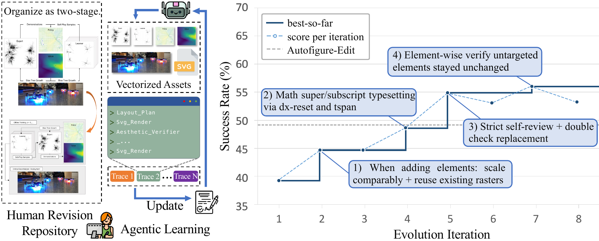
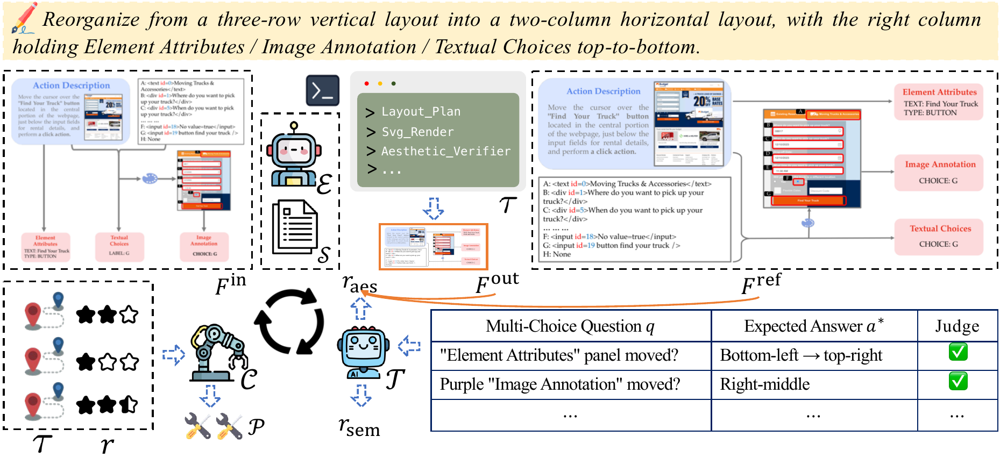

Overview. Left: the Human Revision Repository, before/after figure pairs mined from arXiv paper revisions. Each pair encodes an edit that the original authors made while they refined the manuscript. Middle: Agentic Learning via Skill Evolution. An SVG-editing agent edits the source figure, and its execution traces are distilled into an evolving skill specification that drives future edits. Right: success rate over evolution iterations on a held-out validation split. The best-so-far skill snapshot rises monotonically, and the callouts show representative learned skill rules.
Editing the figures in a research paper is a routine and time-consuming part of everyday research practice: authors relabel components, rearrange panels, and restyle visuals as they revise their manuscripts. Automating this editing workflow under a natural-language instruction, however, is challenging, because a scientific figure is a dense infographic in which heterogeneous visual elements such as schematics, plots, photos, captions, and arrows are composed under a tight visual grammar to advance a specific argument. To address this, we present SciDiagramEdit, a benchmark and skill-evolution framework that learns from natural paper revisions and operates on the figure's editable vector source, where users can inspect and co-edit individual primitives alongside the agent. Our benchmark mines before/after figure pairs from arXiv version histories, each grounded in the authors' own revision intent. To accommodate the diversity of editing instructions, we adopt agentic learning via skill evolution: an agentic proposer continually refines the agent's skill specification from execution traces over multiple epochs. Experiments show that the agent learns meaningful editing skills from paper revisions and substantially improves edit quality over strong single-pass baselines.

Training loop. Given an input figure and a natural-language editing instruction, the Editor uses the current skill specification to produce an edited figure and an execution trace. The Judge scores the output on two axes: an aesthetic preference from a pairwise comparison against the author's revision, and a semantic faithfulness score from a per-sample multiple-choice checklist. The Coach reads the trace, the scores, and the author's revision as a demonstration, and emits a patch that updates the skill specification. The loop iterates over training minibatches with validation gating.
SciDiagramRevision holds 375 editing tasks in its test split. Each task pairs a figure as it appeared in one version of an arXiv paper with the same figure after the authors revised it. A task contains the editable SVG source before the revision, renders before and after, a natural-language instruction that describes the change, and a checklist for grading an attempted edit.
from datasets import load_dataset
ds = load_dataset("yashengsun/SciDiagramRevision", split="test")
row = ds[0]
row["instruction"], row["input_svg"], row["checklist"]The figures come from arXiv submissions and remain under the licence of each source paper.
@article{sun2026scidiagramedit,
title = {SciDiagramEdit: Learning to Edit Scientific Diagrams from Paper Revisions},
author = {Sun, Yasheng and Zeng, Zezi and Yang, Yifan and Luo, Chong and
Wang, Wenyi and Liu, Ziwei and Schmidhuber, J\"urgen},
journal = {arXiv preprint arXiv:2607.15272},
year = {2026},
url = {https://arxiv.org/abs/2607.15272}
}